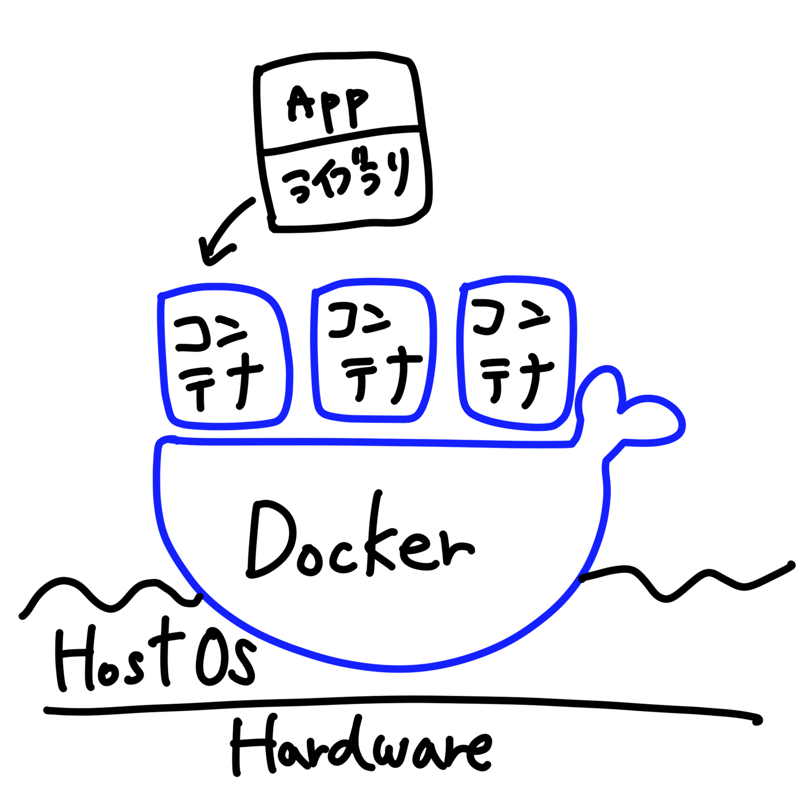

Docker について学ぶ
書いた人:Hunachi
Docker の使われ方
以下のような時に使われる
- 基盤システム（インフラ）から切り離して、アプリケーションを実行したいとき
- 基盤システムが異なる環境でもアプリケーションに同様の動作をさせたいとき
- 同じ環境をささっと作りたいとき
などなど．．
もっと詳しくDockerの基礎を学ぶ
http://docs.docker.jp/get-started/overview.html# を読んでいく．
仮想化とコンテナ
（ホスト型）仮想化とは、CPUやメモリ、I/Oまでも仮想化し、複数のOSを単一のシステム上で実行できるようにする技術． これを実現するソフトウェアのことをハイパーバイザー（hypervisor）という．

コンテナ（型仮想化）とは、カーネルランドよりも上を仮想化する技術．つまり、コンテナが作られる土台となる基盤システムと互換性のあるコンテナしか作れない．

Docker の挙動
コンテナが起動される時の挙動
https://docs.docker.jp/engine/reference/commandline/run.html
https://docs.docker.jp/engine/introduction/understanding-docker.html の画像がわかりやすい。
コマンドたちの説明
docker run
指定したイメージ（image）からコンテナの作成、起動を行う．
使い方
docker run [OPTIONS] IMAGE [COMMAND] [ARG...]
オプション
[OPTIONS]の部分で指定できること
-
-d オプション
- デタッチド・モードで起動する
- このオプションを付けない時はフォアグラウンド・モードで起動される（コンソールに表示させている間だけコンテナが起動するようになる）
-
--name オプション
- コンテナに名前をつけるためのオプション
- --name container-name のように使う．
-
-p オプション
- どのホストのポートでどのコンテナのポートを公開するか指定するためのオプション
- -p host-port:container-port のように使う．（例：-p 8080:80）
Docker Composeとは
https://docs.docker.com/compose/
複数のコンテナを使って、アプリケーションを起動させたい時に使われる． yamlファイルを使ってアプリケーションのサービス（コンテナたち）の設定を書いて、その設定でサービス（コンテナたち）を起動する． 複数のコンテナを使う場合はこの方法を取らないと通信の設定がとても面倒になったりする．
docker-compose.yamlがあるディレクトリ内（同じ階層）で
docker compose up
コマンドを実行すると起動することができる．
バックグラウンドで動かしたい場合は、-dをつけるのを忘れないように．